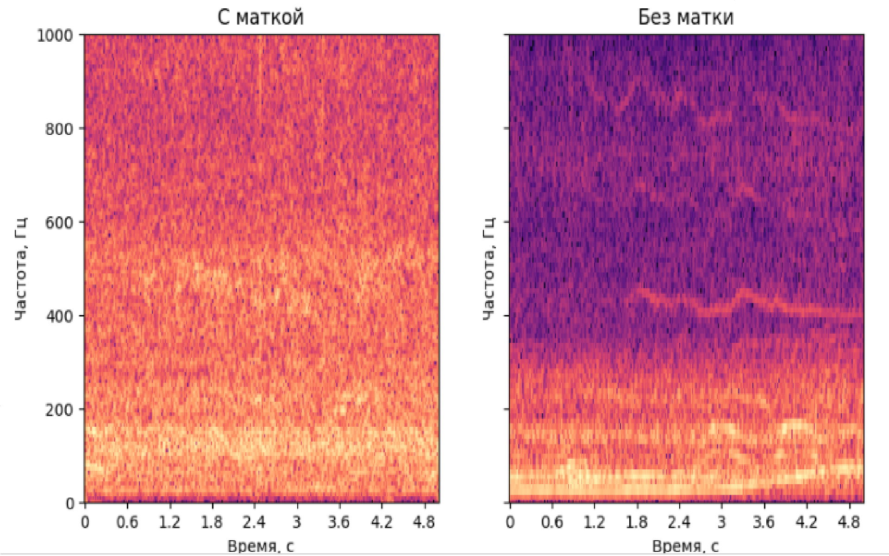

Гипотеза: шум улья без пчеломатки громче нежели, чем улей в норме
Пример разницы шума улья с пчеломаткой и без неё. Видно что отстсвие королевы сильно влияет на шум, но также нужно учитывать, что на количесва шума влияет не только это. Это лишь гарантирует какую-то проблему в улье. А вот неровности и выбросы на графике уже намекают на конкретную пробелему.
